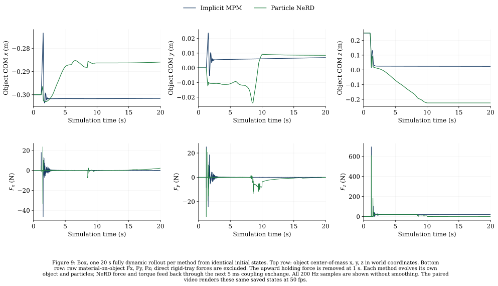
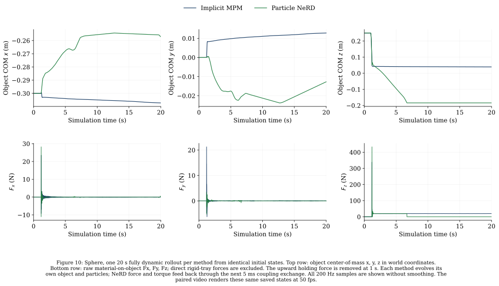
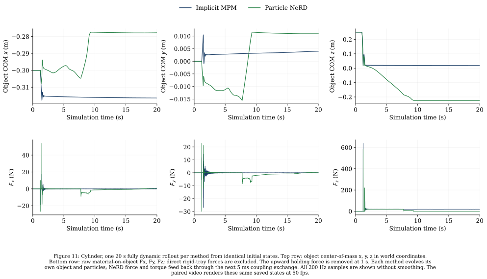

BOX · SPHERE · CYLINDER
Particle NeRD: Elementary object dynamic simulation & force benchmark
Dynamic-object contact-force accuracy (20 s drop-and-support tests) and 20 s fully dynamic closed-loop object simulations with Particle NeRD force feedback.
Overview
← Back to Elementary object & free-fall sand particle prediction benchmark
This page evaluates contact-force reconstruction and 20-second closed-loop dynamic coupling for the shared Particle NeRD model (checkpoint ede105296473849f…, update 10,800). Force estimation is evaluated exclusively on dynamic 2 kg objects (Box, Sphere, Cylinder) that respond to gravity and sand contact; force estimation for kinematic prescribed objects is omitted.
5. Contact-force accuracy and standing stability
Definition in metrics/README.md
Force accuracy is measured on three dedicated 20-second dynamic drop-and-support recordings (Box, Sphere, and Cylinder) with the same frozen checkpoint. Each includes an exact matching 50 fps video and full curves. In this first section, body poses are replayed from the dynamic MPM recording so predicted and reference particles are evaluated along the identical object trajectory.
Recorded dynamic motions for contact-force accuracy
Box: 20-second support test
The 2 kg dynamic object is released at 1 s and settles dynamically in the MPM recording. Support is measured over 20 s.
Sphere: 20-second support test
The 2 kg dynamic object is released at 1 s and settles dynamically in the MPM recording. Support is measured over 20 s.
Cylinder: 20-second support test
The 2 kg dynamic object is released at 1 s and settles dynamically in the MPM recording. Support is measured over 20 s.


Fully dynamic simulation with NeRD force feedback
Three 20-second comparisons, one each for box, sphere, and cylinder. These use the same frozen checkpoint and the same initial states as the MPM drop-and-support references. The 2 kg object starts with its center at z = 0.25 m. An upward force balances gravity until 1 s, then is removed. After release, each method evolves its own object motion and particles; no recorded MPM body motion or future particle state is supplied to NeRD.
Box: dynamic drop and support
Left: Implicit MPM. Right: Particle NeRD. Both objects move dynamically; their trajectories can diverge. Playback is real time at 50 fps.


PNG · PDF · Simulation conditions · Video provenance
Sphere: dynamic drop and support
Left: Implicit MPM. Right: Particle NeRD. Both objects move dynamically; their trajectories can diverge. Playback is real time at 50 fps.


PNG · PDF · Simulation conditions · Video provenance
Cylinder: dynamic drop and support
Left: Implicit MPM. Right: Particle NeRD. Both objects move dynamically; their trajectories can diverge. Playback is real time at 50 fps.

